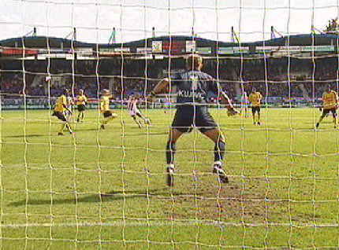

|
Willem II - Roda JC (2-2) 9 april 2006
|
Nadat
Fehér de bal op de lat heeft geschoten
ontstaat er een rebound-
situatie waaruit Redan 1-0 binnen kopt, (6').
Lachambre verzendt een bal naar de zestien.
Cristiano weet ondanks dubbele dekking de bal binnen te koppen: 1-1 in de
19e minuut.
Een jubileumtreffer zoals blijkt.
Van Dijk is hardhandig van de bal gelopen. De scheidsrechter bestraft deze
overtreding niet.
De Gregoor-kenner weet wat er dan gebeuren gaat.
Kort daarna is het al prijs. Van Dijk plant zijn noppen op het scheenbeen
van Dembele.
Van Sichem trekt de rode kaart.
Er ontstaat een behoorlijke opstoot waarbij Voigt, (uiterst rechts), zijn voet
op het been van een Willem II-speler zet.
Dat leidt weer tot revanche op de Duitser die keihard tegen de grasmat
wordt gekwakt door twee Tilbo's.
Om verdere escalatie te voorkomen snelt de technische staf toe.
De geëmotioneerde Sergio wordt door Atteveld afgevoerd ter kalmering met
assistentie van Rudge.
Zowel Voigt als Redan betalen deze clash met een gele kaart.
Willem profiteert vrij vlug van de overtal-situatie en scoort middels Smit
2-1, (40').
Kah in duel met Redan.
Prachtige redding van Kujovic.
Rudge komt voor Voigt.
Huub 1 blijft uiterlijk onbewogen, zijn ziel moet koken... deze wedstrijd mag
niet verloren worden!
Cziommer neemt een vrije trap. Gerommel voor het doel van Zois. Rudge is
alert en scoort 2-2, (64').
Het doelpunt gezien vanachter het net.
Bijna tikt Cziommer de 2-3 binnen, maar Zois redt bekwaam.

In de slotminuut zwijnt Roda als een kei-hard schot van Dembele op de
paal belandt.
Het gelijkspel is niet genoeg om de play-offs zeker te stellen. De volgende
tegenstander en naaste concurrent NEC wordt misschien wel de wedstrijd
van het jaar.
KingsiZeverslag >>>
© Koempels Pleasure Dome
|